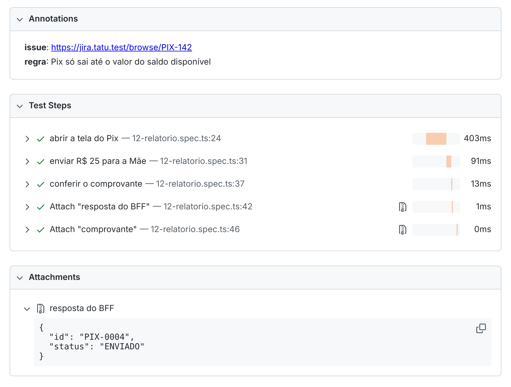

Testes de ponta a ponta · Angular e Java
Conceitos, exemplos e boas práticas para o front em Angular e o back em Java.
Natália Luiza - 13/11/2026
Uma sexta-feira qualquer
18h00
PR aprovado. Os testes passaram na sua máquina.
18h12
Pipeline vermelho: Timeout 3000ms waiting for .btn-primary
18h40
Alguém aumenta o sleep para 5000 e roda de novo. Passou.
Hoje: como não precisar desse sleep, e como descobrir o porquê de uma falha em 30 segundos.
Regra de ouro
Um sleep de 3 segundos passa na sua máquina e quebra no CI. Uma assertion espera só o necessário: até 5 segundos, por padrão.
Roteiro
01
Conceitos
Como o Playwright pensa, ferramentas e a comparação com o Cypress.
02
Frontend Angular
Config, primeiro teste, Page Objects, mocks, Shadow DOM e microfrontends.
03
Backend Java
JUnit 5, API, tela, WireMock e Spring Boot.
04
Organizar e escrever
Pastas, testes que duram, dados pela API, limpeza e BDD.
05
Ambientes e pipeline
Navegador local, variáveis, Docker, CI e relatórios.
06
Além do básico
Acessibilidade, usos que ninguém pensa, CLI e IA.
Parte 1
Como o Playwright pensa, o que vem na caixa e o que muda vindo do Cypress.
Conceitos
Uma biblioteca que controla navegadores de verdade por código: clica, digita, navega e confere a tela como um usuário faria.
Chromium, Firefox e WebKit (a base do Safari), com a mesma API.
TypeScript, Java, Python e .NET. O que você aprende num vale no outro.
Mantido pela Microsoft, com versão nova a cada um ou dois meses.
Conceitos
Ponta a ponta
Playwright com navegador. Poucos testes, só fluxos críticos: login, Pix, pagamento.
Integração e API
Playwright sem navegador e Spring Boot Test. Contratos entre front, BFF e serviços.
Unitários
Muitos e rápidos. Jest, Vitest ou Karma no Angular; JUnit e Mockito no Java.
Conceitos · analogia
Browser · o prédio
Context A
Apartamento do teste 1: cookies e login só dele
Page · /login
Page · /extrato
Context B
Apartamento do teste 2: começa do zero
Page · /pix
Abrir é caro, então abre uma vez para vários testes.
Barato e isolado. Um teste nunca herda o login do outro.
Uma aba. É nela que você clica, digita e confere.
Conceitos
1 · Como encontrar
Uma receita para achar o elemento, avaliada só na hora da ação.
page.getByRole('button', { name: 'Entrar' })
2 · O que fazer
click, fill, check, selectOption, press: o que o usuário faria.
await botao.click();
3 · O que conferir
Tenta de novo até a condição ser verdade ou o tempo acabar.
await expect(page).toHaveURL(/inicio/);
4 · Quando agir
Antes de cada ação, espera o elemento ficar pronto. Sozinho.
Sem sleep e sem waitFor manual
Conceitos
Antes de clicar, o Playwright confere se o elemento está:
Anexado ao DOM
Visível na tela
Estável, sem animação
Habilitado, não disabled
Livre, sem nada por cima
Antes: frágil
await page.waitForTimeout(3000);
await page.click('.btn-primary');
// e se o BFF levar 4 segundos?
Com Playwright: só a intenção
await page
.getByRole('button', { name: 'Pagar' })
.click();
Conceitos
| Locator | Exemplo | Quando usar |
|---|---|---|
| getByRole | getByRole('button', { name: 'Entrar' }) | Primeira escolha: é como o usuário vê |
| getByLabel | getByLabel('CPF') | Campos de formulário com rótulo |
| getByText | getByText('Saldo disponível') | Textos que não são botões nem links |
| getByTestId | getByTestId('card-saldo') | Sem papel nem texto estável |
| locator(css) | locator('.mat-mdc-row') | Último recurso: quebra com o layout |
Dica: no Codegen e no modo UI, o próprio Playwright sugere o melhor locator para o elemento que você aponta.
Conceitos
Certo: espera o estado chegar
await expect(page.getByText('Aprovado'))
.toBeVisible();
// tenta de novo até passar
// ou estourar o timeout
Errado: olha uma vez só
const ok = await page.getByText('Aprovado')
.isVisible();
expect(ok).toBe(true);
// se a API atrasar, falha
As que você mais vai usar
toBeVisible
toHaveText
toHaveURL
toHaveCount
toBeEnabled
toHaveScreenshot
Conceitos
import { test, expect } from '@playwright/test';
test.beforeEach(async ({ page }) => {
await page.goto('/');
});
test('mostra o saldo', async ({ page }) => {
// page novinha: sem cookies de outro teste
await expect(page.getByTestId('saldo'))
.toBeVisible();
});
1
test e expect vêm do Playwright Test, o runner oficial.
2
{ page } é uma fixture: montada antes e desmontada depois de cada teste.
3
Cada teste ganha um context novo, então todos podem rodar em paralelo.
Conceitos
Grava seus cliques e escreve o teste. Ótimo ponto de partida.
npx playwright codegen localhost:4200
Roda, pausa e volta no tempo passo a passo, com a tela de cada um.
npx playwright test --ui
O raio-x da falha: DOM, rede, console e tela em cada passo.
npx playwright show-trace trace.zip
O que passou, o que falhou e por quê, com o trace anexado.
npx playwright show-report
Ao vivo · modo UI
1. Filtre por nome ou tag e rode com um clique
2. Cada passo vira um ponto na linha do tempo
3. Clique num passo e veja a tela daquele instante
4. Watch: salvou o arquivo, o teste roda de novo
npx playwright test --ui
npm run e2e:ui
Ao vivo · Trace Viewer
1. Qual passo falhou e por quê
2. A tela exata naquele instante
3. A rede: POST /api/pix voltou 422, "Saldo insuficiente"
4. Antes e depois de cada passo
// playwright.config.ts
trace: 'on-first-retry',
npx playwright show-trace trace.zip
Conceitos · comparação
| Aspecto | Playwright | Cypress |
|---|---|---|
| Onde roda | Fora do navegador, por protocolo | Dentro do navegador, junto da página |
| Linguagens | TypeScript, Java, Python e .NET | JavaScript e TypeScript |
| Navegadores | Chromium, Firefox e WebKit | Chromium e Firefox; WebKit experimental |
| Abas e janelas | Várias abas, janelas e contextos | Uma aba; outra origem com cy.origin |
| Paralelismo | Grátis, até dentro do mesmo arquivo | Um arquivo por vez; dividir exige Cloud pago |
| Mock de rede | page.route | cy.intercept |
| Estilo | async e await | Comandos encadeados numa fila |
Leitura honesta: o Cypress é ótimo de aprender e tem um runner interativo excelente. O problema é a esteira: sem paralelismo nativo, ele roda um arquivo de cada vez, e dividir a suíte entre máquinas exige o Cypress Cloud, que é pago. No Playwright, workers e --shard vêm de graça.
Conceitos · comparação
Cypress
it('mostra erro do extrato', () => {
cy.intercept('GET', '/api/extrato', {
statusCode: 500,
}).as('extrato');
cy.visit('/extrato');
cy.wait('@extrato');
cy.get('[role=alert]')
.should('contain', 'Não foi possível');
});
Playwright
test('mostra erro do extrato', async ({ page }) => {
await page.route('**/api/extrato', (r) =>
r.fulfill({ status: 500 }));
await page.goto('/extrato');
await expect(page.getByRole('alert'))
.toContainText('Não foi possível');
});
Sem await no Cypress: os comandos entram numa fila e rodam depois.
Migrar é quase linha a linha: intercept vira route, should vira expect.
Conceitos · comparação
| No Cypress | No Playwright |
|---|---|
| Teste de componente Angular oficial | Experimental e sem Angular oficial |
| Acesso direto ao app: cy.window() e stubs com Sinon na página | page.evaluate, addInitScript e exposeFunction; sem Sinon embutido |
| Painel pago: replay, análise de instáveis, balanceamento | Sem painel oficial: relatório HTML, blob e ferramentas de terceiros |
| Comandos encadeados e plugins próprios do Cypress | async e await; qualquer biblioteca do npm |
| Runner interativo com o app ao lado | Modo UI e trace fazem o mesmo papel |
O inverso pesa mais: várias abas e origens, WebKit, paralelismo grátis e Java. Para teste de componente Angular, o Cypress ainda é a escolha.
Conceitos · vindo do Cypress
| No Cypress | No Playwright |
|---|---|
| Cypress.Commands.add('login') | Fixture: o teste pede, o runner entrega e limpa |
| Cypress.Commands.add('enviarPix') | Função comum ou método de Page Object |
| Asserção própria (chai.use) | expect.extend |
| cy.session() | storageState no projeto setup |
| cy.get('[data-cy=pagar]') | testIdAttribute: 'data-cy' + getByTestId('pagar') |
// cy.login() vira fixture
const test = base.extend({
logada: async ({ novoCliente, entrarComo, page }, use) => {
const eva = await novoCliente({ saldo: 42 });
await entrarComo(eva);
await page.goto('/inicio');
await use(eva);
},
});
// asserção própria vira expect.extend
await expect(saldo).toMostrarReais(42);
Exemplos rodando em e2e/16-vindo-do-cypress.spec.ts.
Parte 2
Do ng add ao Page Object, com o BFF sob controle.
Angular · setup
1 · Instale
ng add playwright-ng-schematics
Instala o Playwright Test e liga o ng e2e.
2 · Rode
ng e2e --ui
O webServer sobe o ng serve antes dos testes.
Sem o schematic
npm init playwright@latest
playwright.config.ts
import { defineConfig } from '@playwright/test';
export default defineConfig({
testDir: './e2e',
retries: process.env.CI ? 2 : 0,
use: {
baseURL: 'http://localhost:4200',
trace: 'on-first-retry',
},
webServer: {
command: 'npm start',
url: 'http://localhost:4200',
reuseExistingServer: !process.env.CI,
},
});
Angular · configuração
│ export default defineConfig({
1 │ testDir: './e2e',
│ fullyParallel: true,
│ forbidOnly: !!process.env.CI,
2 │ timeout: 30_000,
│ expect: { timeout: 5_000 },
│ retries: process.env.CI ? 2 : 0,
3 │ reporter: [['list'], ['html']],
4 │ use: {
│ baseURL: 'http://localhost:4200',
│ trace: 'on-first-retry',
│ },
5 │ projects: [
│ { name: 'setup', testMatch: /.*\.setup\.ts/ },
│ { name: 'chromium', dependencies: ['setup'],
│ use: { ...devices['Desktop Chrome'] } },
│ ],
6 │ webServer: { command: 'npm start',
│ url: 'http://localhost:4200' },
│ });
1
O que roda?
Pasta dos testes; paralelo dentro do arquivo; test.only proibido no CI.
2
Quanto tempo e quantas vezes?
30 s por teste, 5 s por expect. No CI, repete a falha.
3
Como relata?
Terminal e HTML. O config de CI troca só esta linha.
4
Como cada teste nasce?
baseURL, trace, captura, idioma, viewport.
5
Em quais variações?
Navegadores, celular, login pronto, tags.
6
O que sobe antes?
O ng serve e o BFF. Na sua máquina, reaproveita.
Angular · configuração
No config
use: { baseURL, trace, locale: 'pt-BR' }
No projeto
projects: [{ use: { ...devices['Pixel 7'] } }]
No arquivo de teste
test.use({ locale: 'en-US' }) test.slow()
Linha de comando
npx playwright test --headed --retries=0
vale por padrão
mais específico ganha
playwright.config.ts
A base: tudo que vale para todo mundo.
playwright.ci.config.ts
Herda a base e troca só os relatórios.
playwright.local.config.ts
Herda a base e troca só o navegador.
npx playwright test --config=playwright.ci.config.ts
Angular · primeiro teste
test('cliente entra e vê o saldo', async ({ page }) => {
// Arrange: chega na tela
await page.goto('/login');
// Act: faz o que o usuário faria
await page.getByLabel('CPF').fill('123.456.789-09');
await page.getByLabel('Senha').fill('segredo123');
await page.getByRole('button', { name: 'Entrar' }).click();
// Assert: confere o resultado
await expect(page).toHaveURL(/inicio/);
await expect(page.getByRole('heading', { name: /Olá/ }))
.toBeVisible();
});
Arrange
Leva o teste ao ponto de partida.
Act
Preenche e clica pelos rótulos e papéis que o usuário vê.
Assert
Confere o efeito: a URL mudou e o título apareceu.
Ao vivo · terminal
Cada linha é um teste: projeto, arquivo, linha, nome e tempo.
O primeiro é o setup: faz o login uma vez e salva a sessão para os demais.
Gravação real, 3x mais rápida. A suíte inteira levou 36 segundos neste ambiente.
npm run e2e
npm run e2e:smoke
npm run e2e:ui
Ao vivo · navegador
await page.getByLabel('CPF')
.fill('123.456.789-09');
await page.getByLabel('Senha')
.fill('segredo123');
await page
.getByRole('button',
{ name: 'Entrar' })
.click();
await expect(page.getByRole('heading',
{ name: 'Olá, Ana' })).toBeVisible();
A legenda no vídeo mostra a linha que está executando. O círculo é o ponteiro do mouse.
Angular · organização
e2e/pages/login.page.ts
import { Page } from '@playwright/test';
export class LoginPage {
constructor(private page: Page) {}
async entrar(cpf: string, senha: string) {
const p = this.page;
await p.goto('/login');
await p.getByLabel('CPF').fill(cpf);
await p.getByLabel('Senha').fill(senha);
await p.getByRole('button', { name: 'Entrar' })
.click();
}
}
e2e/saldo.spec.ts
test('vê o saldo', async ({ page }) => {
const login = new LoginPage(page);
await login.entrar('12345678909', 's3nha');
await expect(page.getByTestId('saldo'))
.toBeVisible();
});
A tela mudou? Você ajusta um arquivo, não quarenta testes.
Angular · autenticação
// e2e/auth.setup.ts
import { test as setup } from '@playwright/test';
setup('autentica', async ({ page }) => {
await new LoginPage(page).entrar(CPF, SENHA);
await page.context()
.storageState({ path: '.auth/cliente.json' });
});
// playwright.config.ts
projects: [
{ name: 'setup', testMatch: /auth\.setup\.ts/ },
{ name: 'app', dependencies: ['setup'],
use: { storageState: '.auth/cliente.json' } },
],
1
O projeto setup faz login uma vez.
2
Salva cookies e storage num arquivo.
3
Os outros testes já nascem logados.
Atenção: coloque .auth/ no .gitignore. São credenciais de teste.
Angular · storage
// ler e escrever, sem page.evaluate
await page.localStorage.getItem('tatu.token');
await page.sessionStorage.setItem('msal.idtoken', 'x');
// guardar o sessionStorage (o storageState não guarda)
const itens = await page.sessionStorage.items();
// restaurar antes do app rodar, em todo teste
await context.addInitScript(({ itens, origem }) => {
if (location.origin !== origem) return;
for (const { name, value } of itens)
sessionStorage.setItem(name, value);
}, { itens, origem });
O que o storageState() salva:
| Onde | Salva? |
|---|---|
| Cookies | Sim |
| localStorage | Sim |
| IndexedDB | Com indexedDB: true |
| sessionStorage | Não: guarde à parte |
O sessionStorage é por aba e some quando ela fecha. Por isso fica de fora.
Exemplos em e2e/17-storage-e-abas.spec.ts.
Angular · login corporativo
// setup: login real, uma vez
await page.goto('/'); // o app manda para o Azure AD
await page.locator('input[type="email"]').fill(USUARIO);
await page.getByRole('button', { name: /Avançar|Next/ }).click();
await page.locator('input[type="password"]').fill(SENHA);
await page.getByRole('button', { name: /Entrar|Sign in/ }).click();
await page.waitForURL(`${baseURL}/**`);
await page.context().storageState({ path: '.auth/azure.json' });
writeFileSync('.auth/azure-session.json',
JSON.stringify(await page.sessionStorage.items()));
1. Usuário só de teste, sem MFA, com acesso condicional só no ambiente de teste.
2. MSAL usa sessionStorage: grave à parte e restaure com addInitScript, ou use cacheLocation: 'localStorage' no build de teste.
3. Credenciais do cofre do CI, por variável de ambiente.
4. Token expira: o setup roda a cada execução da suíte.
O resto dos testes: um provedor falso no lugar do MSAL; só um ou dois passam pelo Azure de verdade.
Angular · navegação
// redirecionamento: o expect espera a navegação
await page.goto('/extrato');
await expect(page).toHaveURL(/\/login$/);
// nova aba ou popup (target="_blank", window.open)
const novaAba = page.waitForEvent('popup');
await page.getByRole('link', { name: 'Comprovante' }).click();
const comprovante = await novaAba;
await expect(comprovante.getByRole('heading')).toBeVisible();
// login em popup (loginPopup do MSAL): o mesmo padrão
const popup = page.waitForEvent('popup');
await page.getByRole('button', { name: 'Entrar' }).click();
await (await popup).waitForEvent('close');
1. Registre a espera antes do clique, senão o evento passa antes.
2. A aba nova é do mesmo contexto: já está logada.
3. Cada aba é uma page: teste nas duas, feche a que abriu.
4. Outra origem? Sem cy.origin: é só usar a page.
Qualquer aba do contexto: context.waitForEvent('page').
Mock · conceito
Navegador
Angular
page.route
BFF
Spring Boot
WireMock
Terceiro
Cotação, antifraude
| Resposta do route | O que faz | Use para |
|---|---|---|
| route.fulfill() | Você responde | Lista, vazio, erro 500, erro 422 |
| route.abort() | Derruba a conexão | Rede caiu, servidor inalcançável |
| route.continue() | Segue para o servidor | Atrasar, trocar header ou URL |
| route.fetch() | Busca a real e te entrega | Mudar um campo da resposta real |
Regra de ouro: registre o route antes do goto. Senão a chamada sai antes de o mock existir.
Angular · mock do BFF
test('avisa quando o BFF falha', async ({ page }) => {
await page.route('**/api/extrato', route =>
route.fulfill({ status: 500 }));
await page.goto('/extrato');
await expect(page.getByRole('alert'))
.toContainText('Não foi possível');
});
Estados que você força em uma linha
Lista vazia
route.fulfill({ json: [] })
Erro no servidor
route.fulfill({ status: 500 })
Rede lenta
setTimeout(() => route.continue(), 3000)
Resposta real, um campo trocado
const res = await route.fetch();
Ao vivo · mocks
1. JSON inventado pelo teste
2. Lista vazia
3. Erro 500 e, no clique, o servidor real
4. Rede lenta: aparece o carregando
5. Rede fora do ar
Mock · avançado
Troca só o saldo, o resto é real
await page.route('**/api/conta', async (r) => {
const res = await r.fetch();
const conta = await res.json();
await r.fulfill({
response: res,
json: { ...conta, saldo: 0 },
});
});
Confere o que o front enviou
const req = page.waitForRequest('**/api/pix');
await enviarPix('mae@tatu.com.br', 150);
expect((await req).postDataJSON()).toEqual({
chave: 'mae@tatu.com.br',
valor: 150,
});
Ótimo para saldo zerado, nome gigante ou campo nulo.
Comece a esperar antes do clique, não depois.
Mock · armadilhas
Route depois do goto: a primeira chamada já passou sem mock.
page.route(...) antes de page.goto(...)
O glob não pega query string: ?mes=11 escapa do mock.
'**/api/extrato*' ou /\/api\/extrato/
O back mudou o contrato e o mock não. Tudo verde, produção quebrada.
HAR regravado + teste de contrato no back
Se você mocka o que está testando, só testa o próprio mock.
mock só nas bordas
Shadow DOM · conceito
document
<tatu-cartao-saldo> host
#shadow-root (open)
<p data-testid="saldo">
<button>Ocultar saldo
Uma árvore de DOM escondida dentro de um elemento, com CSS isolado.
ViewEncapsulation.ShadowDom, design systems e MFEs exportados como Web Component.
document.querySelector não enxerga lá dentro. Outras ferramentas exigem entrar no shadowRoot na mão.
Shadow DOM · na prática
// nada de entrar no shadowRoot na mão
await expect(page.getByTestId('saldo'))
.toContainText('1.520,75');
await page.getByRole('button', { name: 'Ocultar saldo' })
.click();
await expect(page.locator('tatu-cartao-saldo .valor'))
.toBeVisible();
// escopo: procure só dentro do componente
await page.locator('tatu-pix-favoritos')
.getByRole('button', { name: 'Mãe' }).click();
// Java: igual
assertThat(page.getByTestId("saldo")).containsText("1.520,75");
Atravessa o shadow root?
Sim
getByRole, getByText, getByLabel, getByTestId
Sim
Seletores CSS
Não
XPath
Não
Shadow root fechado (mode: 'closed')
Componente do seu time com root fechado? Peça open: fica testável e acessível.
Angular · pegadinhas
mat-select é um combobox e cada mat-option é um option.
getByRole('combobox', { name: 'Conta' })
_ngcontent-*, ng-star-inserted e ids automáticos mudam a cada build.
getByTestId('btn-transferir')
Locators atravessam Shadow DOM aberto, sem configuração extra.
getByLabel('Valor') // dentro do componente
Espere pela URL ou pelo título da tela, nunca pelo chunk carregar.
await expect(page).toHaveURL(/\/extrato$/)
Angular · microfrontends
// remote fora do ar: o shell mostra o fallback
await page.route('**/remoteEntry.js', (r) => r.abort());
await page.goto(SHELL);
await expect(page.getByRole('alert'))
.toContainText('indisponível');
// remote no ar, com o BFF dele na borda
await page.route('**/api/extrato', (r) =>
r.fulfill({ json: [{ descricao: 'Salário', valor }] }));
const extrato = page.getByRole('region', { name: 'Extrato' });
await expect(extrato.getByRole('listitem')).toHaveCount(1);
Bloqueie o remoteEntry e confira o fallback do shell.
O remote registra o elemento que o shell usa: customElements.get.
getByRole entra no Shadow DOM aberto, sem configuração.
Mocke só as APIs do remote; o resto da página é real.
Parte 3
A mesma API, agora com Maven e JUnit 5.
Java · setup
pom.xml
<dependency>
<groupId>com.microsoft.playwright</groupId>
<artifactId>playwright</artifactId>
<version>1.59.0</version>
<scope>test</scope>
</dependency>
terminal ou CI
# baixa os navegadores antes dos testes
mvn exec:java -e \
-D exec.mainClass=com.microsoft.playwright.CLI \
-D exec.args="install --with-deps"
Mesmos conceitos: Playwright, Browser, BrowserContext, Page e Locator.
Síncrono: nada de async e await.
@UsePlaywright integra ao JUnit 5 e injeta as fixtures.
Na sua máquina, a primeira execução baixa os navegadores sozinha.
Confira a versão mais recente no Maven Central antes de fixar.
Java · testes de API
@UsePlaywright(ContasApiTest.Opcoes.class)
class ContasApiTest {
public static class Opcoes implements OptionsFactory {
@Override
public Options getOptions() {
return new Options().setApiRequestOptions(
new APIRequest.NewContextOptions()
.setBaseURL("http://localhost:8080"));
}
}
@Test
void listaContas(APIRequestContext request) {
APIResponse resp = request.get("/api/contas?cliente=42");
assertThat(resp).isOK();
assertTrue(resp.text().contains("saldo"));
}
}
Só HTTP. Rápido como um teste de integração.
OptionsFactory define baseURL e headers, como o token, uma vez.
E um POST?
request.post("/api/pix",
RequestOptions.create()
.setData(Map.of("valor", 150)));
Java · teste de tela
@UsePlaywright
class LoginE2ETest {
@Test
void clienteEntraEVeOSaldo(Page page) {
page.navigate("http://localhost:4200/login");
page.getByLabel("CPF").fill("123.456.789-09");
page.getByLabel("Senha").fill("segredo123");
page.getByRole(AriaRole.BUTTON,
new Page.GetByRoleOptions().setName("Entrar")).click();
assertThat(page).hasURL(Pattern.compile("inicio"));
assertThat(page.getByTestId("saldo")).isVisible();
}
}
Do TypeScript para o Java
TS page.goto(url)
Java page.navigate(url)
TS await expect(l).toBeVisible()
Java assertThat(l).isVisible()
TS { name: 'Entrar' }
Java .setName("Entrar")
TS await l.click()
Java l.click()
Java · mock
Na tela: o mesmo page.route
page.route("**/api/cotacao", route ->
route.fulfill(new Route.FulfillOptions()
.setStatus(200)
.setContentType("application/json")
.setBody("{\"valor\": 4.99}")));
entrar(page);
assertThat(page.getByText("Dólar hoje"))
.containsText("4,99");
No back: WireMock no lugar do terceiro
@DynamicPropertySource
static void props(DynamicPropertyRegistry r) {
r.add("cotacao.url", wiremock::baseUrl);
}
wiremock.stubFor(get(urlEqualTo(CAMINHO))
.willReturn(okJson(json)
.withFixedDelay(3_000)));
APIResponse r = api.get("/api/cotacao", comToken());
assertEquals(503, r.status());
Java · mocks
| page.route (Playwright) | WireMock | |
|---|---|---|
| Onde corta | Entre o navegador e o BFF | Entre o BFF e outro serviço |
| O que enxerga | Só o que o navegador chama | Qualquer cliente HTTP, de qualquer linguagem |
| Vida | Um teste, dentro do processo | Um servidor; pode ser compartilhado |
| Gravar e repetir | routeFromHAR | Recording e proxy |
| Estado entre chamadas | Você programa no handler | Scenarios com estados |
| Use para | Testar a tela | Testar o backend |
Não competem: o Playwright não vê a chamada que o BFF faz para o serviço de terceiro. A tela usa page.route; o BFF usa WireMock.
Java · Spring Boot
@SpringBootTest(webEnvironment = RANDOM_PORT)
@UsePlaywright
class ExtratoIT {
@LocalServerPort int porta;
@Test
void extratoVazio(Playwright pw) {
APIRequestContext api = pw.request().newContext(
new APIRequest.NewContextOptions()
.setBaseURL("http://localhost:" + porta));
APIResponse r = api.get("/api/extrato?cliente=99");
assertThat(r).isOK();
assertEquals("[]", r.text());
api.dispose();
}
}
O Spring Boot inicia a aplicação numa porta livre.
O Playwright chama a API como um cliente chamaria.
Com Testcontainers, banco e fila também são de verdade.
O Failsafe roda essas classes no mvn verify.
Parte 4
Pastas, testes que duram, dados e limpeza.
Organizar · pastas
e2e/
pix/ pix.spec.ts pix-agendado.spec.ts
extrato/ extrato.spec.ts
login/ login.spec.ts auth.setup.ts
pages/ PixPage.ts ExtratoPage.ts
components/ Menu.ts CartaoSaldo.ts
fixtures/ index.ts dados.ts bff.ts
dados/ fabricas.ts massas/
apoio/ matchers.ts api.ts
playwright.config.ts
playwright.ci.config.ts
.env.exemplo
1. Por funcionalidade, não por tipo: pix/ junto, não "testes-de-formulario".
2. Page Object para tela usada por vários specs; component para pedaço que se repete.
3. Fixtures num lugar só, uma por assunto, juntas com mergeTests.
4. Dados em fábricas, não em JSON copiado de teste em teste.
5. Configs na raiz: base, CI e local herdando uma da outra.
Escrever · testes que duram
01
Evite
test('pix 2')
Prefira
test('Pix acima do saldo avisa')
02
Evite
login + Pix + extrato + sair
Prefira
só o Pix; login vem da fixture
03
Evite
clicar 6 telas para ter saldo
Prefira
novoCliente({ saldo: 0 })
04
Evite
if (await aviso.isVisible()) ...
Prefira
dois testes, um para cada caso
05
Evite
expect(store.state.saldo)
Prefira
expect(saldo).toMostrarReais(70)
06
Evite
test('usa a conta criada antes')
Prefira
cada teste cria e apaga o seu
Escrever · dados
test('prepara pela API, confere na tela',
async ({ page, novoCliente, entrarComo }) => {
// Arrange: pela API, em milissegundos
const bia = await novoCliente({ nome: 'Bia', saldo: 250.5,
extrato: [{ descricao: 'Conta de luz', valor: -180 }] });
await entrarComo(bia);
// Act e Assert: pela tela, que é o que está em teste
await page.goto('/inicio');
await expect(page.getByTestId('saldo')).toMostrarReais(250.5);
await page.getByRole('link', { name: 'Extrato' }).click();
await expect(page.getByRole('row', { name: /Conta de luz/ }))
.toMostrarReais(180);
});
1. Prepara pela API
cliente, saldo, lançamentos
2. Age pela tela
o fluxo que está em teste
3. Confere na tela, e no backend se importa
saldo caiu? lançamento existe?
A condição: o que está em teste vai pela tela. Só o resto vem pela API.
Escrever · limpeza
novoCliente: async ({ request }, use) => {
const criadas: string[] = [];
await use(async (dados) => { // o teste roda aqui
const r = await request.post('/api/teste/clientes',
{ data: dados });
const cliente = await r.json();
criadas.push(cliente.token);
return cliente;
});
for (const token of criadas) // roda mesmo se falhar
await request.delete(`/api/teste/clientes/${token}`);
},
1. Navegador: nada a fazer. Cada teste ganha context novo, sem cookie nem storage.
2. Dado do teste: a fixture cria e apaga, depois do use().
3. Dado da suíte: projeto de teardown, que roda no fim de tudo.
4. Ambiente: reset do banco de teste no pipeline, antes da suíte.
projects: [{ name: 'setup', teardown: 'limpeza' },
{ name: 'limpeza', testMatch: /limpeza\.ts/ }]
A regra: cada teste cria o seu dado. Limpar é garantia, não dependência.
Escrever · BDD
# language: pt
Funcionalidade: Pix
Contexto:
Dado que sou uma cliente com saldo de R$ 100
Cenário: Pix dentro do saldo
Quando eu envio um Pix de R$ 30 para "mae@tatu.com.br"
Então vejo o comprovante
E meu saldo passa a ser R$ 70
Cenário: Pix acima do saldo
Quando eu envio um Pix de R$ 500 para "mae@tatu.com.br"
Então vejo o aviso "Saldo insuficiente"
bdd/pix.feature vira teste do Playwright pelo playwright-bdd: paralelo, trace e relatório iguais.
Quando('eu envio um Pix de R$ {int} para {string}',
async ({ pix }, valor, chave) => {
await pix.abrir();
await pix.preencherEEnviar(chave, valor);
});
Java: Cucumber com Playwright Java.
Vale a pena quando o negócio lê ou escreve os cenários. Se só dev lê, é uma camada a mais.
Escrever · desafio
test('paga a fatura', async ({ page }) => {
await page.goto('/faturas');
await page.waitForTimeout(3000);
await page.locator('.col-md-6 > div > button')
.click({ force: true });
const ok = await page.locator('#msg').isVisible();
expect(ok).toBe(true);
});
test.only('usa a fatura paga no teste anterior',
async ({ page }) => {
// ...
});
6
problemas escondidos neste trecho
Leve um minuto. Quem achar mais, fala primeiro.
A resposta está no próximo slide.
Escrever · cuidado
await page
.waitForTimeout(3000);
Lento quando sobra, quebra quando falta.
const ok = await
el.isVisible();
expect(ok).toBe(true);
Não espera nada. Use expect(el).toBeVisible().
locator('.col-md-6 > div a')
Quebra no próximo redesign. Prefira papel ou testid.
await btn.click(
{ force: true });
Esconde bug real: botão coberto ou desabilitado.
test('cria a conta', ...);
test('usa a conta', ...);
Um falha e dez falham. E não roda em paralelo.
test.only('meu teste',
async () => { ... });
No CI só ele roda. Barre com forbidOnly: true.
Escrever · hábitos
page.getByRole('button',
{ name: 'Pagar' })
Resiste a mudanças de CSS e ainda cobra acessibilidade.
await request.post(
'/api/contas', { data });
Criar pela API é muito mais rápido do que pela tela.
await test.step('paga',
async () => { ... });
O relatório e o trace mostram cada etapa.
test('Pix',
{ tag: '@smoke' },
async ({ page }) => {...});
Rode só o essencial: --grep @smoke.
retries: 2,
trace: 'on-first-retry',
A falha chega com o raio-x, sem rodar tudo gravando.
page.route('**/api/cotacao',
r => r.fulfill({ json }));
Serviço de terceiro fora do teste, o seu back de verdade dentro.
Parte 5
Da sua máquina ao CI, com o mesmo resultado.
Ambientes · navegador local
01
npx playwright install chromium
Padrão. Versão casada com a do Playwright.
É o que o CI usa. Precisa baixar uma vez.
02
use: { channel: 'chrome' }
use: { channel: 'msedge' }
Sem download. Usa o navegador instalado.
Segue as políticas da empresa, que podem bloquear automação.
03
launchOptions: {
executablePath: '/opt/chrome/chrome' }
Chromium portátil ou versão travada.
Você cuida da compatibilidade de versão.
npm run e2e:local
PW_CANAL=msedge npm run e2e:local
PW_LENTO=500 npm run e2e:local -- --headed
No exemplo: o playwright.local.config.ts herda a base e troca só o navegador.
Em Java: mvn verify -Dcanal=chrome
Ambientes · rede corporativa
| Situação | O que configurar | Efeito |
|---|---|---|
| Download bloqueado | channel: 'chrome' | Usa o Chrome instalado e pula o install |
| Mirror interno | PLAYWRIGHT_DOWNLOAD_HOST | Baixa o navegador do Artifactory ou Nexus |
| Proxy com certificado | HTTPS_PROXY + NODE_EXTRA_CA_CERTS | O install passa pelo proxy e confia na CA |
| Cache no agente de CI | PLAYWRIGHT_BROWSERS_PATH | Uma pasta de navegadores para vários projetos |
| Java sem download | PLAYWRIGHT_SKIP_BROWSER_DOWNLOAD=1 | Com -Dcanal=chrome, não baixa nada |
# mirror interno + proxy da empresa
export PLAYWRIGHT_DOWNLOAD_HOST=https://artifactory.empresa/playwright
export NODE_EXTRA_CA_CERTS=/etc/ssl/ca-empresa.pem
npx playwright install chromium
No CI, prefira o mirror: a versão do navegador fica igual em todo agente.
Ambientes · variáveis
// playwright.config.ts
try { process.loadEnvFile(); } catch {} // lê o .env, se existir
const AMBIENTE = process.env.BASE_URL;
export default defineConfig({
use: { baseURL: AMBIENTE ?? 'http://localhost:4200' },
// com BASE_URL, o app já está no ar: não sobe nada
webServer: AMBIENTE ? undefined : { command: 'npm start' },
});
// e2e/auth.setup.ts
await login.entrar(process.env.TATU_CPF, process.env.TATU_SENHA);
Quem ganha: o terminal, o CI e o Docker ganham do .env.
.env fora do git; o .env.exemplo documenta cada variável.
No CI: os segredos vêm do cofre da ferramenta.
Java: System.getenv("TATU_BASE_URL"); opções do Maven com -D.
BASE_URL=https://homologacao.exemplo \
npx playwright test
Ambientes · Docker
FROM mcr.microsoft.com/playwright:v1.65.0-noble
WORKDIR /app
COPY package.json package-lock.json ./
RUN npm ci
COPY . .
ENV CI=1
CMD ["npx", "playwright", "test"]
docker build -f Dockerfile.e2e -t tatu-e2e .
docker run --rm --init --ipc=host \
--env-file .env \
-v "$PWD/playwright-report:/app/playwright-report" \
tatu-e2e
--ipc=host: o Chromium não fica sem memória.
--init: cuida dos processos filhos do navegador.
--env-file: as variáveis entram sem ir para a imagem.
-v: o relatório sai do container.
Java: mcr.microsoft.com/playwright/java, com JDK e Maven.
A tag da imagem é a versão do @playwright/test. Atualizou um, atualize o outro, ou o navegador não é encontrado.
Pipeline · CI
01
Instala o projeto como no build.
02
Baixa só os que a suíte usa.
03
Em paralelo, divididos em shards.
04
Publicado sempre, com o trace.
# Angular
npm ci
npx playwright install --with-deps chromium
npx playwright test --shard=1/4
# Java
mvn -B verify
Retry com trace: a falha já chega com o raio-x anexado.
Imagem Docker oficial: o mesmo navegador em qualquer agente.
Desde a 1.65: relatórios só com as falhas.
Ao vivo · relatório HTML
1. Rodar a suíte já gera a pasta playwright-report
2. Resumo: passou, falhou, instável, pulado
3. Em cada teste: anotações, erro com a linha, passos, tela e trace
4. Instável é falhou e passou na repetição. Não ignore
npx playwright test
npx playwright show-report
Pipeline · relatórios
test('Pix de R$ 25 gera comprovante', {
tag: '@pix',
annotation: { type: 'issue',
description: 'https://jira.tatu.test/browse/PIX-142' },
}, async ({ page }, testInfo) => {
await test.step('abrir a tela do Pix', async () => {
await page.goto('/pix');
});
await test.step('enviar R$ 25 para a Mãe', async () => {
// ...
});
await testInfo.attach('resposta do BFF', {
body: JSON.stringify(corpo, null, 2),
contentType: 'application/json',
});
});

Ao vivo · prints e gravação
// prints
await page.screenshot({ fullPage: true });
await tabela.screenshot();
await page.screenshot({ mask: [saldo] });
// vídeo de um trecho, com legenda
await page.screencast.start({ path: 'pix.webm' });
await page.screencast.showActions();
await page.screencast.showChapter('Pix');
// no config: grava sozinho quando falha
screenshot: 'only-on-failure',
video: 'retain-on-failure',
Pipeline · relatórios
playwright.ci.config.ts
export default defineConfig(base, {
workers: process.env['CI'] ? 4 : undefined,
reporter: [
['list'],
['html', {
open: 'never',
outputFolder: 'relatorio' }],
['junit', {
outputFile: 'resultados/junit.xml' }],
['json', {
outputFile: 'resultados/resultado.json' }],
],
});
npm run e2e:ci
npx playwright show-report relatorio
| Reporter | Para quê |
|---|---|
| list | Log legível no terminal e no CI |
| html | Relatório navegável, com trace e capturas |
| junit | XML que Jenkins, GitLab e Azure entendem |
| json | Dados crus para dashboards próprios |
| blob | Pedaços de cada shard, para juntar depois |
No pipeline: publique a pasta relatorio mesmo quando os testes falham.
Só as falhas: desde a 1.65, onlyFailures: true deixa o HTML, o JSON e o JUnit enxutos.
No Java: o Maven grava o XML em target/failsafe-reports.
Pipeline · relatórios
Máquina 1
--shard=1/4
Máquina 2
--shard=2/4
Máquina 3
--shard=3/4
Máquina 4
--shard=4/4
Um blob por máquina
blob-report/*.zip
Junta tudo
merge-reports
Um HTML só
artefato do pipeline
# em cada máquina
npx playwright test --shard=1/4 --reporter=blob
# no passo final, com todos os blobs na mesma pasta
npx playwright merge-reports --reporter html ./todos-os-blobs
Publique sempre: o passo do relatório roda mesmo com teste falhando.
Pipeline pronto: ci/github-actions-e2e.yml no tatu-web.
Java: XML em target/failsafe-reports e trace.zip por teste que falhou.
Parte 6
Acessibilidade, usos que ninguém pensa, CLI e IA.
Além do básico · acessibilidade
import AxeBuilder from '@axe-core/playwright';
test('/pix sem violações A e AA', async ({ page }) => {
await page.goto('/pix');
const resultado = await new AxeBuilder({ page })
.withTags(['wcag2a', 'wcag2aa'])
.analyze();
expect(resultado.violations).toEqual([]);
});
new AxeBuilder({ page })
.include('tatu-cartao-saldo') // só um trecho
.disableRules(['color-contrast'])
.analyze();
O que o axe pega
Imagem sem alt, botão sem nome, campo sem rótulo, contraste baixo, papéis ARIA errados.
O que ele não pega
Ordem do foco, texto que faz sentido no leitor de tela, uso real com teclado. Automação cobre só uma parte; o resto é teste manual.
Instalação
npm i -D @axe-core/playwright
Cada violação traz
id da regra, impact (de minor a critical), nodes com o elemento e helpUrl com a correção.
Além do básico · Lighthouse
import lighthouse from 'lighthouse';
import desktop from 'lighthouse/core/config/desktop-config.js';
const navegador = await chromium.launch({
args: ['--remote-debugging-port=9222'] });
const r = await lighthouse(`${baseURL}/login`,
{ port: 9222, output: 'html' }, desktop);
await testInfo.attach('lighthouse.html',
{ body: r.report, contentType: 'text/html' });
expect(nota(r, 'accessibility')).toBeGreaterThanOrEqual(90);
O Lighthouse conecta no Chromium pela porta de depuração; o Playwright abre e controla.
Notas mínimas viram expect: o PR que derruba a acessibilidade falha.
O relatório do Lighthouse vai anexado ao relatório do Playwright.
Projeto separado: é lento, roda com npm run e2e:lighthouse.
Axe ou Lighthouse? Axe por tela, em todo teste; Lighthouse por página, de vez em quando.
Além do básico · performance
// Web Vitals dentro da página
const lcp = await page.evaluate(() => new Promise((ok) =>
new PerformanceObserver((l) => ok(l.getEntries().at(-1).startTime))
.observe({ type: 'largest-contentful-paint', buffered: true })));
expect(lcp).toBeLessThan(2500);
// as chamadas mais lentas da tela
page.on('requestfinished', (r) => tempos.push(
{ url: r.url(), ms: r.timing().responseEnd }));
// celular simples e trace de CPU (Chromium)
const cdp = await context.newCDPSession(page);
await cdp.send('Emulation.setCPUThrottlingRate', { rate: 4 });
await browser.startTracing(page, { path: 'cpu.json' });
1. LCP e CLS com orçamento: o teste falha se piorar.
2. Rede: a API mais lenta aparece no topo da lista anexada.
3. CPU 4x mais lenta: o celular simples do cliente.
4. Trace de CPU: abre no painel Performance do DevTools e mostra a função culpada.
Rode contra o build, num ambiente estável. Exemplos em e2e/18-performance.spec.ts.
Além do básico · usos inesperados
01
O erro de JavaScript que não aparece na tela, mas o cliente sente.
page.on('pageerror', (e) => erros.push(e.message));
// ...navega por todas as telas
expect(erros).toEqual([]);
02
URL vai parar em log, proxy e analytics. A LGPD agradece.
page.on('request', (r) => urls.push(r.url()));
expect(urls.filter((u) => u.includes(cpf)))
.toEqual([]);
03
Um subscribe a mais dobra a carga no BFF, e ninguém percebe.
expect(chamadas).toEqual({
'/api/conta': 1, '/api/cotacao': 1,
});
04
Não quebra por fonte ou cor; quebra se o botão sumir.
await expect(nav).toMatchAriaSnapshot(`
- link "Extrato"
- button "Sair"`);
Além do básico · usos inesperados
05
Sessão expirando, horário de corte, virada do mês. Sem esperar.
await page.clock.install();
await page.clock.fastForward('05:00');
await page.clock.setFixedTime('2026-11-20T20:00');
06
A tela avisa? E quando a rede volta, ela se recupera?
await context.setOffline(true);
await expect(page.getByRole('alert')).toBeVisible();
await context.setOffline(false);
07
Comprovante em PDF e capturas do manual a cada release.
const pdf = await page.pdf({ format: 'A4' });
await page.screenshot({
path: 'manual/extrato.png', fullPage: true });
08
O mesmo login, de hora em hora, com alerta se falhar ou ficar lento.
npm run vigia
{"ok":true,"ms":457,"limite":5000}
Além do básico · CLI
const r = await rodar(['scripts/vigia.mjs'], {
cwd: testInfo.outputPath(), // pasta só deste teste
env: { VIGIA_SENHA: 'errada' }, // cenário pela variável
});
expect(r.codigo).toBe(1);
expect(JSON.parse(r.stderr)).toMatchObject({ ok: false });
expect(existsSync(`${pasta}/vigia-falha.png`)).toBe(true);
1. Código de saída: 0 é sucesso, o resto é erro.
2. stdout: o resultado. Em JSON, fica fácil conferir.
3. stderr: a mensagem de erro.
4. Efeitos: arquivo criado, porta aberta, chamada feita.
CLI que sobe servidor: espere a porta no stdout e teste com request ou page.
Java: ProcessBuilder dentro do JUnit, com a mesma lógica.
O runner não exige navegador: paralelismo, timeout, retry, pasta temporária e relatório servem para qualquer programa. Exemplos em e2e/14-cli.spec.ts.
Além do básico · IA
01
O agente (Claude, Copilot) dirige o navegador pela árvore de acessibilidade, sem precisar de visão.
npx @playwright/mcp@latest
02
Comandos curtos e snapshots em arquivo: gasta menos contexto do que o MCP.
npm i -g @playwright/cli
playwright-cli open localhost:4200
03
Planner planeja, generator escreve o teste, healer conserta o que quebrou.
npx playwright init-agents --loop=vscode
04
Copia o erro com o contexto da página, pronto para colar no assistente.
A IA escreve o rascunho; quem aprova a asserção é gente. Um healer pode afrouxar um expect ou pular um teste para ficar verde.
Além do básico · IA
.claude/skills/testes-e2e/SKILL.md: as regras da casa, lidas pelo agente quando o assunto é teste.
---
name: testes-e2e
description: Como escrever e consertar testes
Playwright neste projeto.
---
1. Locators por papel e rótulo. Nunca CSS de layout.
2. Nunca waitForTimeout: espere com expect.
3. Dado pela API (novoCliente). Cada teste cria o seu.
4. Consertando: abra o trace antes de mexer.
5. Não afrouxe asserção nem use test.skip.
.mcp.json: dá ao agente um navegador para abrir o app e ler a tela.
{ "mcpServers": {
"playwright": {
"command": "npx",
"args": ["@playwright/mcp@latest"] } } }
Juntos: o MCP mostra a tela, a skill diz como escrever o teste dela.
Playwright CLI: playwright-cli install --skills instala a skill oficial de automação.
Além do básico · IA
01
Entra: cliques no app (Codegen)
Sai: código do teste para revisar
02
Entra: Dado, Quando, Então
Sai: teste que roda, via passos (BDD)
03
Entra: um plano em Markdown
Sai: teste gerado pelos agentes de IA
# specs/pix.md
## Pix acima do saldo
1. Entrar como cliente com saldo de R$ 100
2. Enviar Pix de R$ 500 para mae@tatu.com.br
3. Ver o aviso "Saldo insuficiente"
test('Pix acima do saldo', async ({ page }) => {
// ...gerado e conferido ao vivo pelo generator
await expect(page.getByRole('alert'))
.toHaveText('Saldo insuficiente');
});
Além do básico · 2026
1.61
junho
Passkeys (WebAuthn) e acesso à Web Storage API nos testes.
1.63
setembro
Test locks: testes que mexem no mesmo recurso não rodam ao mesmo tempo.
1.64
outubro
locator.within(), execução embaralhada e WebMCP para testar ferramentas expostas a agentes de IA.
1.65
novembro
Roda com Bun, relatórios só com falhas e fim dos testes no Node 20. Tem mudanças que quebram: leia antes de atualizar.
MCP
para agentes
Playwright MCP: um agente de IA abre o navegador, navega e investiga a tela por você.
Mão na massa
Angular + Playwright. Vinte arquivos de teste, do login ao Lighthouse, e BDD.
npm install
npx playwright install chromium
npm run e2e
# com interface visual
npm run e2e:ui
Spring Boot + Playwright Java. API, tela e WireMock.
mvn test # unitários
mvn verify # API, tela e mocks
# vendo o navegador
mvn verify -Dheaded=true
Juntos: suba o tatu-api na porta 8080 e o tatu-web passa a usar o back real no lugar do mock em Node.
Para levar
1
Locator, ação e assertion: todo teste é uma frase.
2
Espere por estado, nunca por tempo.
3
Se o leitor de tela acha o elemento, o getByRole também acha.
4
Mock nas bordas, real no meio: page.route no front, Spring Boot de verdade no back.
5
Quando o CI quebrar, abra o trace antes de abrir o código.
6
Prepare pela API, confira na tela, limpe na fixture.
Para começar
1
Um fluxo crítico, um teste
Escolha o login ou o Pix de um MFE e escreva o teste com getByRole.
2
No pipeline, com raio-x
retries: 2 e trace: 'on-first-retry' desde o primeiro dia.
3
Um sleep a menos
Troque um waitForTimeout da suíte atual por uma assertion.
4
Acessibilidade de brinde
Rode o axe nas telas desse mesmo fluxo.
github.com/natalialuizads/
playwright-apresentacao
Slides, os dois projetos e como rodar